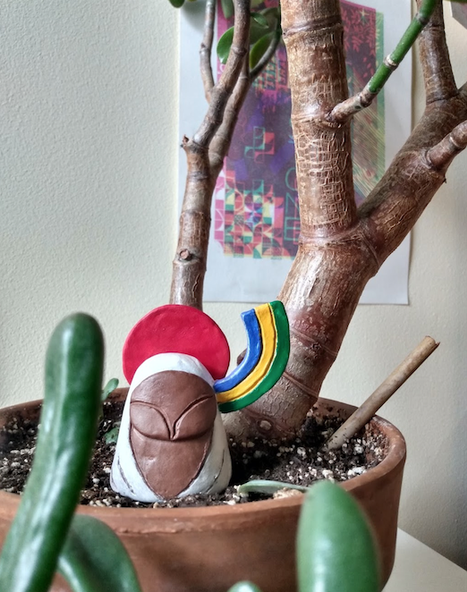
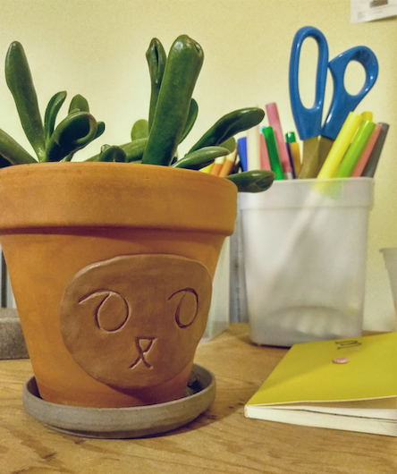

I love working with clay. It feels like I'm reconnecting with the Earth, and it helps me practice thinking and making in 3D. Here are some sculptures I've made.
I've enjoyed making sculptures that fit inside plant pots. It creates an interesting scene with my plants.
I've also been working on making pieces to organize my art supplies. Themes I'm noticing: mountains, forests.
I'd like to explore more with making my own plant pots, or decorating existing ones.